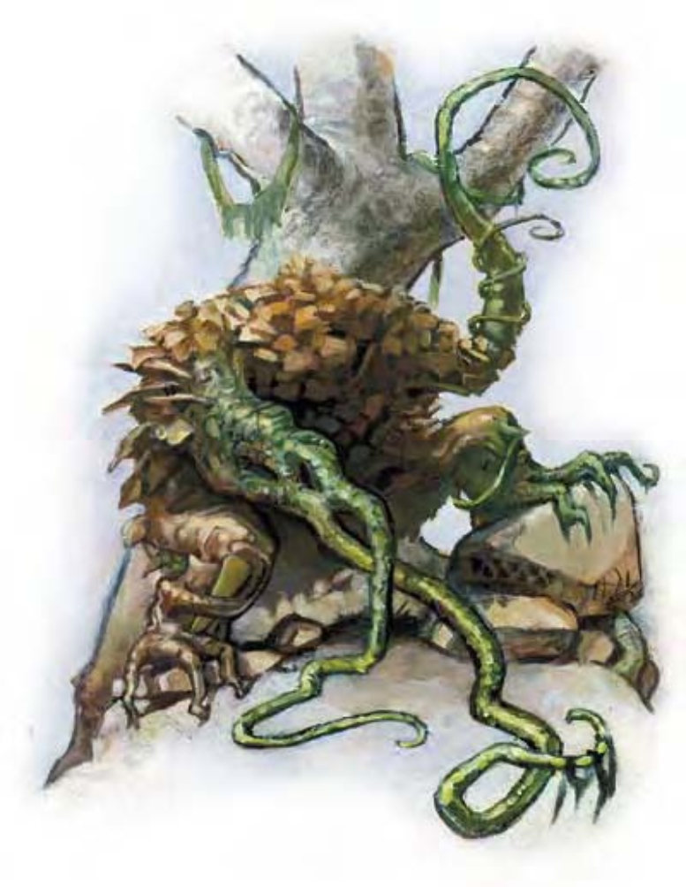

这种生物像是一团茎叶，轮廓略具人形。他有一副桶状的躯体、绳子般的手臂与粗壮的短腿，看上去不像有头。
蔓生怪又可简称为蔓怪，像是由一坨腐烂蔬菜堆积而成，但却是具有智力的食肉植物。
蔓怪的脑和知觉器官位于上半身。蔓怪在自然环境中几乎是无声隐形，开战时总让对手陷入措手不及状态。他可将部分身体浸入浅沼中，耐心地等待不知情的生物走过。蔓怪在水中一样移动迅速，常常在夜晚潜进未防备的旅行者营地。
冒险者经常谈起见到蔓怪在雷电交加中行走，不因被闪电直击而退缩。
直立时，蔓怪的体围8英尺，高6英尺。重达3800磅。
| 资料栏位 | 蔓生怪 (Shambling Mound) 大型植物 |
| 生命骰 | 8d8+24 (60HP) |
| 先攻 | +0 |
| 速度 | 20英尺 (4格)、游泳20英尺 |
| 防御等级 | 20 (-1体型、+11天生)、接触9、措手不及20 |
| 基本攻击/擒抱 | +6 / +15 |
| 攻击 | 挥击+11近战 (2d6+5) |
| 全力攻击 | 2挥击+11近战 (2d6+5) |
| 占据/触及 | 10英尺 / 10英尺 |
| 特殊攻击 | 精通擒抱、紧勒2d6+7 |
| 特殊能力 | 黑暗视觉60英尺、对电击免疫、昏暗视觉、植物特性、火焰抗力10 |
| 豁免 | 强韧+9、反射+2、意志+4 |
| 属性 | 力量21、敏捷10、体质17、智力7、感知10、魅力9 |
| 技能 | 躲藏+3*、聆听+8、潜行+8 |
| 专长 | 钢铁意志、猛力攻击、专攻武器 (挥击) |
| 环境 | 温带沼泽 |
| 组织 | 单独 |
| 宝藏 | 十分之一钱币、50%宝物、50%物品 |
| 阵营 | 通常绝对中立 |
| 进化 | 9-12HD (大型)；13-24HD (超大型) |
| 等级修正值 | +6 |
蔓生怪使用两只巨大的手状附肢捶打并紧勒对手。
精通擒抱 (特异)：如果蔓怪两次挥击都击中对手，即可利用即时动作进行擒抱攻击，且不会引发对方借机攻击。如果擒抱成功，则可定住对手进行“紧勒”。
紧勒 (特异)：一旦通过擒抱检定，蔓怪即可造成2d6+7点伤害。
对电击免疫 (特异)：蔓怪不会受到电击伤害。反之，任何针对蔓怪的电击攻击 (像是法术“电爪”或“闪电束”) 都可让他获得暂时生命值，每体质值1d4点。蔓怪每一小时丧失1点暂时生命值。
技能：蔓生怪在进行“躲藏”、“聆听”及“潜行”检定时具有+4种族加值。*若在沼泽或森林区域进行“躲藏”检定则具有+12种族加值。